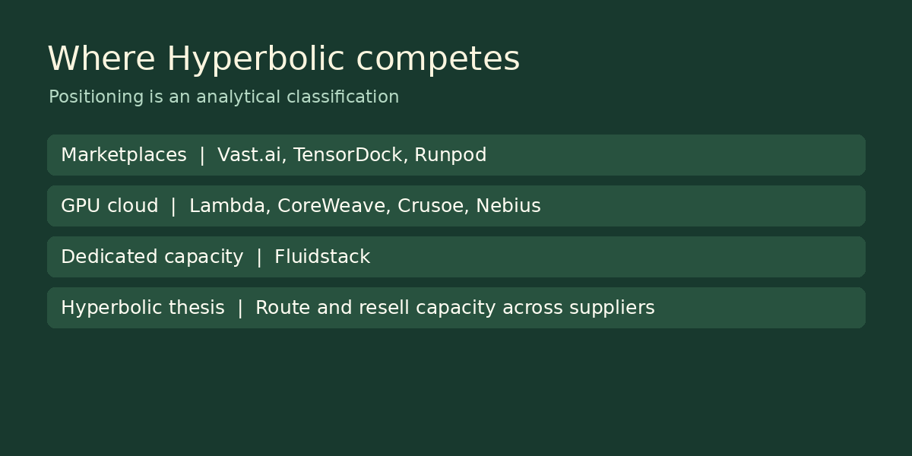
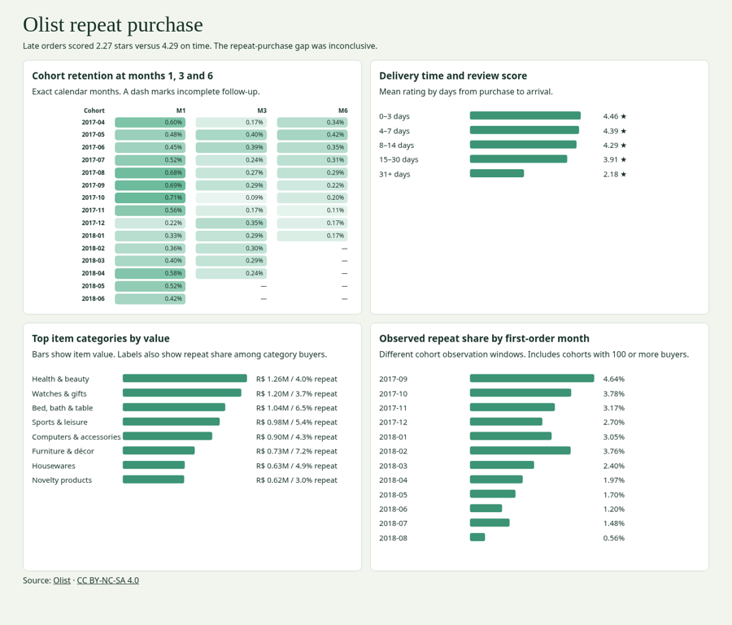
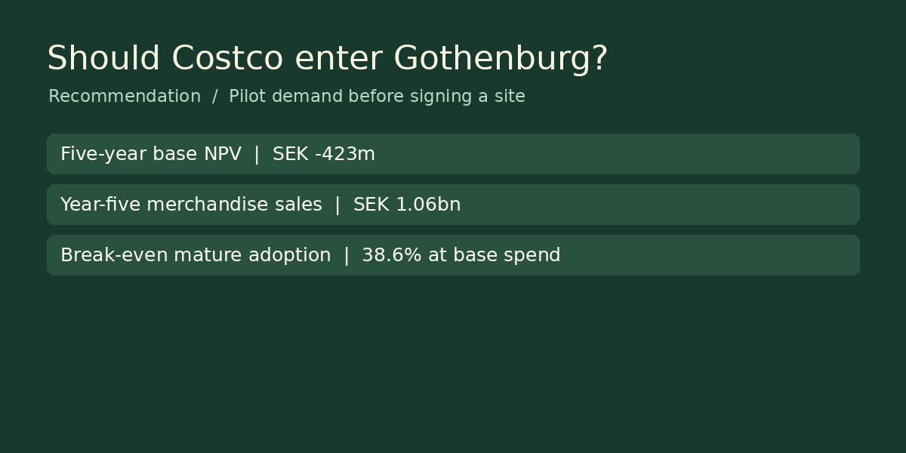
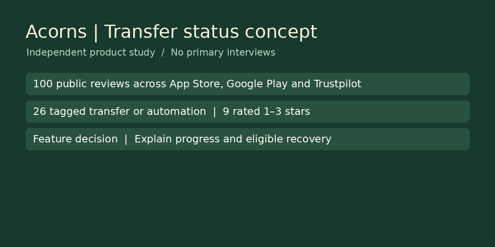
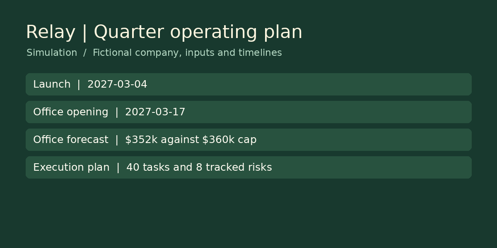

Hyperbolic | VC investment memo
Pass until repeat usage and contribution margin support the GPU marketplace thesis.
I work across venture capital, AI, and startups.

Pass until repeat usage and contribution margin support the GPU marketplace thesis.

Pass at the modeled premium. The five-year base case returns 7.4% against a 20% hurdle.

Late orders scored 2.27 stars versus 4.29 on time. The repeat-purchase gap was inconclusive.

Pilot paid demand before committing to a third Swedish warehouse.

Show investors where a transfer stands and what they can safely do next.

One quarter plan keeps a product launch and office opening on schedule in the simulation.